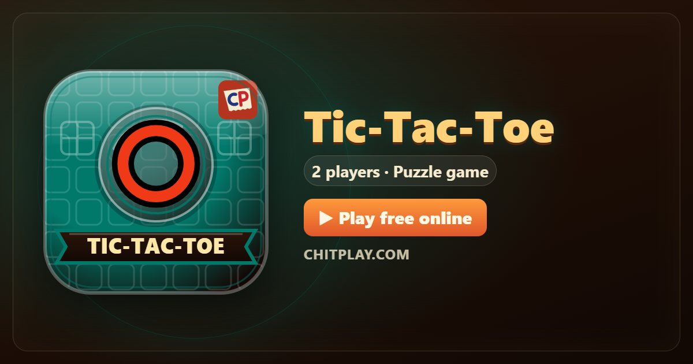

Tic-Tac-Toe: play free online and learn the rules
- 👥 2 players
- ⏱ 1–3 minutes
- 👤 guest play
- 🌍 online opponents
- 🤖 computer players
- 📶 friends nearby
- 🆓 free, no sign-up
Tic-Tac-Toe, also called noughts and crosses, is probably the first strategy game most people learn: a grid of nine squares, and three in a line to win. Careful players always draw, so the fun lies in setting a trap for someone who slips.

Ways to play Tic-Tac-Toe
- 👤 Guest play Start straight away against computer players, no account and no sign-up. Choose 2 players.
- 🌍 Play online Get matched with real players from around the world. If nobody is free within a few seconds, computer players take the empty seats so you are never left waiting.
- 📶 Friends nearby Open a room, and friends join from their own phones with a 6-digit code or by scanning a QR code. Works on the same Wi-Fi or across the internet.
- 📱 One phone Pass one phone around the table; secrets stay hidden until it is your turn.
- 👀 Watch Let the computer players show you how the game goes before you jump in.
How to play
- One player is ✕ and the other is ◯. ✕ goes first.
- Take turns claiming one free square.
- Three of your marks in a line, across, down or diagonally, wins.
Scoring
A game ends in a win or a draw. The result table shows 1 for the winner.
Who wins
The first to make a line of three wins. If all nine squares fill with no line, it's a draw.
Tips
- Take the centre or a corner first.
- Look for a fork: one move that makes two lines at once.
- Always block a line of two before you do anything else.
Questions
Can you always win at Tic-Tac-Toe?
No. If both players play well, every game ends in a draw.
Can the computer be beaten?
Yes. It usually plays well but sometimes slips, so stay alert for your chance.
More games
Points in this game have no value. ChitPlay involves no real money, betting or prizes.